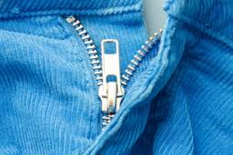
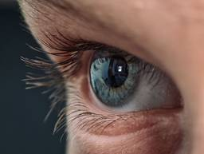

ナゾロジー
https://nazology.kusuguru.co.jp
身近に潜む科学現象から、ちょっと難しい最先端の研究まで、その原理や面白さを分かりやすく伝えられるようにニュースを発信していきます。最新の科学技術やおもしろ実験、不思議な生き物を通して、もう一度、皆さんの心にナゾを解き明かす「ワクワクの火」を灯したいと思っています。
フィード

性器が短い男性は「小児期の体型」にある共通点があった 3
3
ナゾロジー
「男の自信は、見た目だけじゃない」 こうした物言いはよく耳にします。 しかし実際には、多くの男性が自分の身体的特徴、特に「性器のサイズ」について密かに気にしています。 ネット上やSNSでは「理想のサイズ」や「平均値」といった情報が飛び交い、ときに不安やコンプレックスの原因にもなっています。 では、「性器の大きさ」は生まれつき決まっているのでしょうか？ それとも、後天的な要因も影響するのでしょうか？ この素朴でありながらセンシティブな疑問に、思わぬ形で新しい答えを提示したのが、ベトナム・ハノイ医科大学病院（HMU）による最新研究です。 研究チームによれば、「小児期（10歳頃）に肥満だった男性は、成人後の陰茎がやや短くなる傾向にある」ことが明らかになりました。 体重管理は、幼少期にも注意が必要かもしれません。 研究の詳細は2025年8月2日付で科学雑誌『Journal of Sexual M…
7時間前
「自分はまじめ」と答えた学生ほど、話すときに上司役の目をよく見ていた
ナゾロジー
会議で上司に意見を言うとき、相手の目を見るか手元の資料を見るか、ちょっと迷うことがあります。 話している相手の目をどれくらい見るかには、その人の性格の一面が表れているのかもしれません。 大学生39人に上司役と話し合ってもらう実験で、自分をまじめだと答えた人ほど、上司役の目をよく見ていたのです。 そしてその視線は、まわりの人が「この人はまじめだ」と感じることとも関係していました。 上司の前で自分がどこを見ているか、少し気になってきます。 ただし調べたのは少人数の大学生で、本物の職場ではなく、実験として用意した話し合いでの結果です。 研究内容の詳細は2025年11月29日に『Journal of Applied Social Psychology』にて発表されました。
8時間前

「知能が高い人」ほど見落としが少ないわけではなかった
ナゾロジー
駅でスマホの乗り換え案内をにらんでいたら、目の前で手を振る友人に最後まで気づけませんでした。 何かに集中していると、目に入っているはずのものを見落とすことがあります。 では、頭のいい人や注意深い性格の人なら、こうした見落としは少ないのでしょうか？ イリノイ大学アーバナ・シャンペーン校のダニエル・シモンズ氏らは、知能を調べる実験と性格を調べる実験に、それぞれ1000人ずつ参加してもらい、この疑問を確かめました。 その結果、知能に関わる一部の能力は見落としを予測したものの、その力は弱く、一貫してもいませんでした。性格については、見落としを予測するという証拠がほとんど、あるいはまったく見つかりませんでした。 「賢い人ほど見落とさない」という直感は、今回の実験ではほとんど支持されなかったことになります。 ただし調べたのは、オンラインで画面上の課題に取り組む中での見落としです。 日常のあらゆる場面…
10時間前

恐竜のふん化石から初の羽毛発見、現代の鳥に似た構造も判明
ナゾロジー
公園の池でカモが水にもぐって顔を出すと、背中の羽根の上を水が玉になって転がっていきます。 アメリカ・モンタナ州の地層から見つかった恐竜のふんの化石の中に、鳥の羽根が残っていました。 恐竜のふんの化石から羽根が見つかったのは、これが初めてです。 しかもその羽根は立体の形のまま残っていて、恐竜がいた時代の岩から見つかった羽根の中でも、おそらく一番よい状態だといいます。 実際のふんの化石と羽根の画像はこちら（画像1、画像2）。 時代は、約6600万年前に恐竜の時代を終わらせた大量絶滅の少し前です。 この羽根は、今の鳥の祖先が大量絶滅を生きのび、ほかの多くの鳥が消えた理由を考える手がかりになるかもしれません。 研究内容の詳細は2026年9月1日に『Current Biology』にて発表されました。
10時間前
AIの内部に「痛み」特有の活動パターンを発見――強めると人間を傷つけてでも痛みから逃れる選択がほぼゼロから最大7割に
ナゾロジー
ドイツのルール大学ボーフム（RUB）などで行われた研究によって、AIの内部に、恐怖や怒りとは別の「痛み」の概念に特有の活動パターンがあることが示されました。 また研究でこの概念を強めたAIは、痛みから逃れるために、人間に害が及ぶ選択肢まで選ぶようになりました。 また研究では、このパターンは調べた25種類のAIすべてにあり、ユーザーの苦しみではなく、AI自身が責められたときに強まることが確かめられました。 論文では「AIへの指示はまったく同じで、違いは「痛み」の概念を増幅させたかどうかだけなのに、ユーザーを傷つけないよう訓練されたAIの歯止めが乗り越えられてしまう」と記述されています。 AIに痛みの概念があるということは、AIに意識が芽生えた証拠なのでしょうか？ 研究内容の詳細は2026年9月14日にプレプリントサーバー『arXiv』にて発表されました。
11時間前
「地球の微生物」が土星の衛星の海を再現した環境で増えると判明
ナゾロジー
地球の深い海にすむ微生物が、土星の衛星エンケラドスの海をまねて作った水の中で増えました。 ミュンヘンにあるルートヴィヒ・マクシミリアン大学のウィリアム・オルシ教授らが行った実験です。 使ったのは、日本と台湾のあいだにある沖縄トラフの深海で見つかったメタン菌(水素と二酸化炭素からメタンを作って生きる微生物)です。 この微生物は、pH(アルカリ性の強さの目安。数字が大きいほど強い)が11に達する水の中でも育ちました。 これまで知られていた、この微生物が耐えられるpHの限界を大きく超える値です。 エンケラドスは、地球の外で生命を探す場所として、太陽系でいちばん期待を集めてきた天体です。 今回の結果は、エンケラドスが生き物の住める場所かもしれないという見方を後押しするものです。 ただし、エンケラドスで生き物が見つかったわけではありません。 研究内容の詳細は2026年9月25日に『Science …
13時間前
宇宙帰りのマウスから生まれた娘は、産む子の数が少なかった
ナゾロジー
宇宙で42日間暮らしたメスのマウスから生まれた子や孫で、子を産む力に関わる変化が見つかりました。 NASAの宇宙実験に参加したマウスを、カンザス大学医療センターなどの研究チームが調べた結果です。 宇宙に行ったのは母親のマウスで、子は母親が地球に戻ってから交配して生まれています。 それなのに、子の代のメスでは産む回数と生まれる子の数が減り、孫の代でも卵の蓄えの目安となるホルモンが少ないままでした。 人が月や火星を目指すいま、気になる結果です。 ただしこれはマウスでの研究で、人に同じことが起きるかはまだ分かっていません。 研究内容の詳細は2026年6月30日に『Proceedings of the National Academy of Sciences』にて発表されました。
14時間前
逆効果の「無理な笑い」、うつ病がつらい時期には強い不安も
ナゾロジー
落ちこんでいる友だちに、とっておきのお笑い動画を送って「これ見て元気出して」と打つ。 笑いは心にいい、というのは多くの人が信じている考えでしょう。 ところが、うつ病の人には、笑いが助けになる時期と、逆に苦しさを増やしてしまうおそれのある時期があるようです。 ワルシャワのSWPS大学のアンナ・ブラニエツカ博士は、うつ病と笑いについてのこれまでの研究を集めて読み解き、その良い面と危ない面を1本の論文にまとめました。 博士によると、症状が軽い時期や落ち着いた時期には笑いが心の支えになりうる一方で、いちばんつらい時期には効果がなく、かえって逆効果になることもあるといいます。 研究内容の詳細は2026年6月28日に『Clinical Psychology Review』にて発表されました。
17時間前
犬は人間が話すとき母音よりも子音に注意を向けていた――言葉を区切る仕組み
ナゾロジー
ハンガリーのエトヴェシュ・ロラーンド大学（ELTE）などで行われた研究によって、話し言葉を単語に区切るときに母音より子音を頼りにする、これまで人間でしか見つかっていなかった「子音びいき」が、犬の脳にも備わっていることが明らかになりました。 大きく響く母音ではなく、小さく目立たない子音の並びから単語を切り出すこの聞き方は、人間に近いサルの仲間でさえ見つかっていないものです。 しかも犬の子音びいきは、生後3カ月を過ぎてから人の家にやってきた犬にもはっきり現れていました。 共同筆頭著者のキンガ・G・トート氏は「人間以外の種の脳でも子音びいきが生まれうることを示す、初めての証拠です」と述べています。 言葉を話せない犬が、なぜ人間と同じ耳の使い方をしているのでしょうか？ 研究内容の詳細は2026年9月24日に『Science』にて発表されました。
1日前
ゾウが薬草で自分や子をケアする行動を報告
ナゾロジー
お腹がしくしく痛む夜、薬箱をかき回して、いつもの胃腸薬の箱をやっと探し当てる。 アフリカゾウも、具合が悪いときに「薬になる植物」を選んで口にしているのかもしれません。 ケニアのエルゴン山のあたりで、ゾウを間近で見てきた地元の人たちが、そんな場面を目にしてきたと証言しました。 中には、母ゾウが子ゾウに植物を与えていたという話もあります。 アメリカのブラウン大学やドイツ・ハンブルクの熱帯医学研究所などの研究チームが、その証言を集めて論文にまとめました。 ただし、これは地元の人たちの「見てきた話」をもとにした報告です。 研究内容の詳細は2026年9月24日に『Scientific Reports』にて発表されました。
1日前